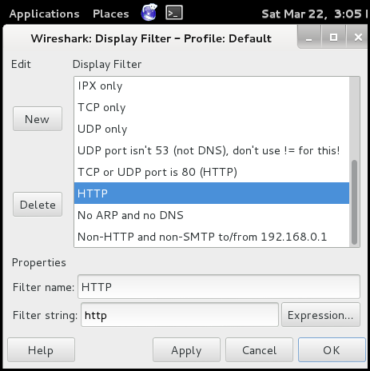

Homework Part 1: HTTP Sniffing
The Goal
For this part of the homework we will be looking at a man-in-the middle attack involving the intecepting and sniffing of HTTP packets that were not originally meant for you. By making use of a sniffing tool combined with what is known as an ARP attack, we can both intercept and read packets that were meant for a different machine on the network. After you are done reading these packets you can forward them to the intended machine leaving the victim none the wiser.
Getting Started
-
You will need to download and install VMware player
We will be using VMware player to run a VM that will be used to sniff traffic meant for your main machine. There is a version of it for windows and linux, so it is required that you have one of these types of machines. Having a windows VM will probably not work since in most cases you cannot run a VM inside a VM. The download is about 100 MB.
-
You will need to download an image of Kali Linux
Just the basic 32/64-bit version should work fine (not the ARM images). The download is about 2.5 GB. The image is in a .7z file so you will need 7-Zip to extract it. Open the .7z with 7zFM.exe and extract it. The image is about 10.9 GB unzipped because of the reserved harddrive space in the VM so make sure you have space for it.
-
Mount the image in VMware player
Open your newly extracted .vmx file with VMware player.

-
Launch the VM and login
When prompted to login select "Other...". Type in "root" when prompted for a username and "toor" when prompted for a password.
-
Launch Wireshark
It can be found under Applications -> Kali Linus -> Sniffing/Spoofing -> Network Sniffers -> wireshark.

You may get some errors about certain libraries failing to load or warnings about sniffing while being root but these can be ignored.
Select the network "eth0" which is the main ethernet network the VM.

To start sniffing click "Start" (No need to do so yet). When you do chances are you will start getting too many packets to count and it will be very difficult to pick the ones you are looking for out. To fixed this go to the menu item "Analyze -> Display Filters..." and select "HTTP" from the list of packet types and click "OK".
-
Navigate to [TODO] to begin receiving HTTP traffic that can be sniffed
Traffic Sniffing
For this part of the homework, you will monitor different types of network traffic and report what you see. You will use the "wget" command to download some apps that we have created for you to use, so just make sure that you are downloading them into the directory that you want.
-
Run Wireshark during these sniffing exercises.
You can filter what you see in Wireshark by using the filter field near the top of the application. You can type into it manually or right click on items in the list and add fileters based on them. For example, it will be useful to filter by IP for this part of the homework.
TCP Sniffing
TCP sniffing will allow you to see low level individual packets that are being sent across a network.
-
Run "wget http://mitm.azurewebsites.net/AzureSite/files/tcp_client>"
-
Run "tcp_client". This will send TCP traffic for you to monitor.
-
Observe the traffic in Wireshark and report what you see by taking a screenshot.
HTTP Sniffing
HTTP sniffing will allow you to see higher level web requests being sent across a network. Under the hood, each of these HTTP requests is made up of multple TCP packets.
-
Run "wget http://mitm.azurewebsites.net/AzureSite/files/http_client>"
-
Run "http_client". This will send HTTP traffic for you to monitor.
-
Observe the traffic in Wireshark and report what you see by taking a screenshot.
HTTPS Sniffing
HTTPS sniffing will allow you to see higher level web requests similar to HTTP requests. The requests payload in these cases are considered secure and will appear encrypted.
-
Run "wget http://mitm.azurewebsites.net/AzureSite/files/https_client>"
-
Run "https_client". This will send HTTPS traffic for you to monitor.
-
Observe the traffic in Wireshark and report what you see by taking a screenshot.
Part [TODO] Deliverables
- [TODO]